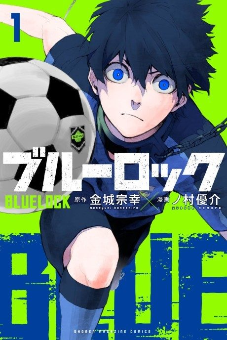

Animeter
← Rankings Anime
Anime
Manga2022 · Action, Drama, Sports
Blue Lock
ブルーロック
AniList7.9
Animeter—
Season 124 ep
MangaCh. 150
Arcs
Episodes numbered continuously 1–38 across both seasons (Season 2 is episodes 25–38).
Story arcFiller arc38 episodes
1
Season 1
First Selection
After Japan's World Cup failure, the football union locks 300 young strikers in a facility called Blue Lock to forge the world's most selfish egoist striker. Yoichi Isagi is one of them.
Ep 1–11Ch 1–40
2
Season 1
Second Selection
Survivors must team up and steal each other's teammates in a series of three-on-three-plus matches.
Ep 12–22Ch 41–84
3
Season 1
Third Selection
The top players of Blue Lock are told they will face Japan's U-20 national team.
Ep 23–24Ch 85–94
4
Season 2
U-20 Tryouts
Blue Lock's players fight for places in the lineup that will face U-20 Japan.
Ep 25–29Ch 95–111
5
Season 2
Blue Lock vs. U-20 Japan
Blue Lock faces the U-20 national team, led by Rin's older brother Sae Itoshi, before a national audience.
Ep 30–38Ch 111–149
Sources: Anime Filler Guide